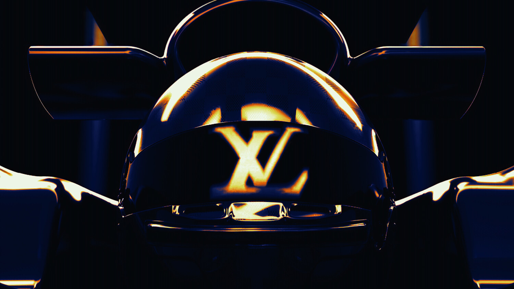

The Monaco Grand Prix has a new name. From 4 June 2026, the eighty-third running of the world’s most famous street race will be known as the Formula 1 Louis Vuitton Grand Prix de Monaco. The trophy will arrive in a monogrammed trunk hand-crafted in Asnières. Fashion has not simply partnered with motorsport. It has taken the title deed.
The deal is part of LVMH’s ten-year partnership with Formula 1, the most expensive sports sponsorship in luxury history. Louis Vuitton replaces TAG Heuer — also an LVMH brand — as the Monaco race’s title partner, but the shift is more than a rotation within the group’s portfolio. TAG Heuer was a natural fit: a watchmaker sponsoring a timed sport. Louis Vuitton is a fashion house, a trunk-maker, a symbol of travel elevated to art. Its presence above the Monaco Grand Prix transforms the race from a sporting event with luxury associations into a luxury event with sporting content.
The distinction matters. Monaco has always been the most glamorous fixture on the Formula 1 calendar, but that glamour was incidental — a consequence of geography and wealth rather than design. The yachts in the harbour, the casino on the hill, the narrow streets lined with barriers: these were the setting, not the product. With Louis Vuitton as title partner, the glamour becomes intentional. It becomes the point.
The trunk
The trophy trunk is now in its sixth edition, and each year it becomes more explicitly a fashion object. The 2026 version is hand-crafted at Louis Vuitton’s historic Asnières workshop on the outskirts of Paris, the same atelier that has produced trunks for the house since 1859. The exterior is covered in monogram canvas presented in a striking exclusive red that mirrors the Monaco flag. The signature V — standing for both Vuitton and Victory — appears in white and red stripes echoing the Principality’s national colours.
The trunk is not an accessory to the race. It is the centrepiece of the podium ceremony, carried out before the champagne is sprayed, positioned between the winner and the cameras. In a sport where every surface is sold to a sponsor, the trophy trunk occupies the most valuable real estate of all: the moment of triumph. Vuitton has understood that the image of a driver lifting a trophy from a monogrammed case will travel further and last longer than any trackside hoarding.
Monaco was always fashion’s Grand Prix. Louis Vuitton has simply made it official. The trunk on the podium is not a sponsorship. It is a coronation.
Sienna CaldwellThe calendar shift
The 2026 Monaco Grand Prix moves from its traditional May date to 4–7 June, becoming the first European round of the season. The shift was made to avoid a clash with the Indianapolis 500, but it has a secondary effect that benefits LVMH considerably. June in Monaco means the season is fully under way, international media are in Europe for the summer schedule, and the Principality is at its most photogenic. The harbour is full, the light is long, and every terrace along the circuit is occupied. It is, in other words, the perfect setting for a fashion house that sells aspiration as much as product.
The calendar change also positions the Monaco race as a midpoint between the spring/summer fashion shows and the cruise collections. For a luxury conglomerate that operates across fashion, watches, wine and spirits, the timing creates opportunities for cross-brand activations that extend well beyond trackside signage. Moët & Chandon on the podium, TAG Heuer on the timing screens, Dior in the paddock hospitality suites, Vuitton on the trophy — the race becomes a showcase for the entire LVMH ecosystem.

Louis Vuitton’s Formula 1 partnership: victory now travels in monogram. Photography courtesy of CR Fashion Book
Twenty-four trunks
Monaco is the jewel, but it is not the only circuit dressed in monogram. Under the ten-year deal, Louis Vuitton produces a bespoke trophy trunk for each of Formula 1’s twenty-four international races. Every trunk is crafted at Asnières. Every design references the host country’s flag or cultural motifs. The cumulative effect is to position Louis Vuitton not as a sponsor of a single race but as the custodian of Formula 1’s ceremonial identity. When a driver wins in Suzuka, Silverstone or Interlagos, the trophy emerges from a Vuitton case. The brand is present at every moment of victory, on every continent, across every time zone.
It is a strategy that would have been unimaginable a decade ago. Luxury houses sponsored individual drivers or appeared on the occasional watch face, but the idea of a fashion brand naming a Grand Prix would have struck the paddock as absurd. Formula 1’s audience was engineering-focused, overwhelmingly male, and indifferent to the brand signifiers that drive luxury sales. What changed was the audience. Drive to Survive brought a younger, more fashion-conscious viewership. Social media turned the paddock into a front row. Drivers became style icons. Lewis Hamilton arrived at circuits in Valentino. Charles Leclerc modelled for Giorgio Armani. The grid became a runway, and LVMH saw an opportunity that no competitor had the scale to match.
What it means for Monaco
For the Principality, the Vuitton partnership is an extension of an identity that Monaco has cultivated since Grace Kelly arrived. The city-state has always functioned as a stage for luxury, and the Grand Prix is its most-watched production. Adding Louis Vuitton’s name to the race title formalises what was already implicit: Monaco is not a country that happens to host a race. It is a luxury brand that happens to be a country.
The Automobile Club de Monaco, which has organised the race since 1929, retains operational control. The streets are the same. The barriers are the same. The swimming pool chicane and the tunnel and the harbour backdrop are unchanged. What shifts is the frame. The race is now presented as a Louis Vuitton event, and that framing will determine how a new generation of viewers understands Monaco — not as a relic of mid-century glamour but as a living expression of what luxury looks like when it moves at three hundred kilometres per hour.
On 7 June, a driver will stand on the podium above the harbour, lift a trophy from a red monogrammed trunk, and spray champagne over the barriers. The image will be broadcast to a global audience measured in hundreds of millions. Somewhere in Asnières, the craftsmen who built the trunk will see their work on screen for approximately four seconds. It will be the most expensive four seconds in fashion.